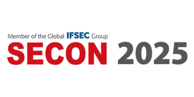

SECON

세계 보안 엑스포는 전 세계의 보안 관련 기업들이 참가하여
최신 기술과 제품을 선보이고, 업계 전문가들이 교류하는 국제적인 전시회다.
물리 보안, 사이버 보안 등 다양한 분야의 혁신적인 솔루션을 한자리에서 확인할 수 있다.
최신 보안 기술들과 다양한 보안 기업, 시스템, 솔루션들을 경험하고
유익한 정보들을 얻을 수 있어서 좋았고 보안의 중요성이 더욱 부각되는 시대에
혁신적인 아이디어와 제품들이 필요하다는 것을 깨닫게 되는 시간이었다.